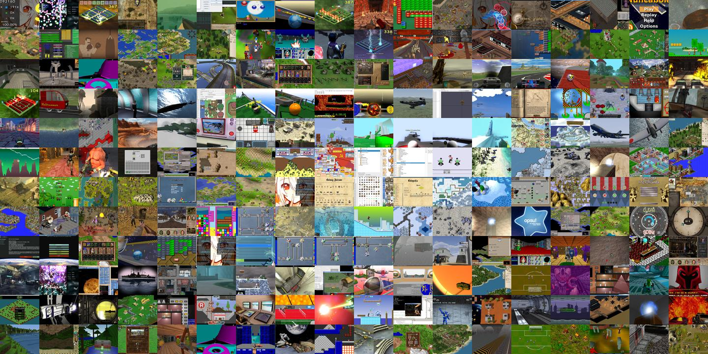

Information about 1,708 open source games and 325 game engines and tools.
1,022 of the games are mature and 903 are actively developed. The entries are written in 63 programming languages by 15,069 developers and were inspired by 814 existing games (see statistics). The descriptions are stored on Github and concentrate on technical and general aspects of the games. This work is a best-effort based result and will surely contain inaccurate information.
